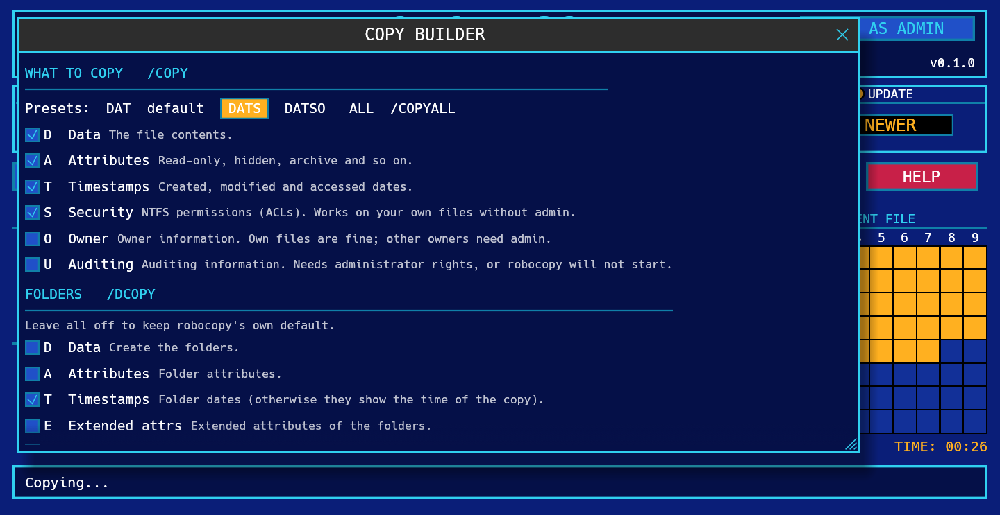
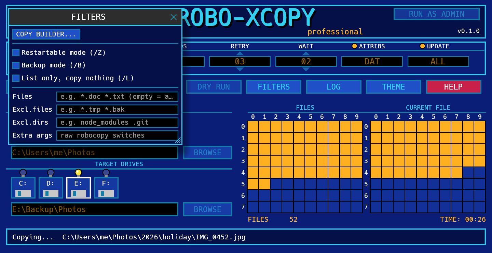
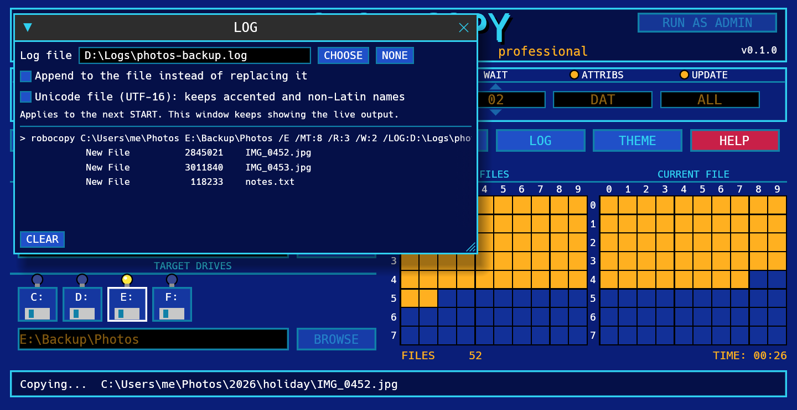
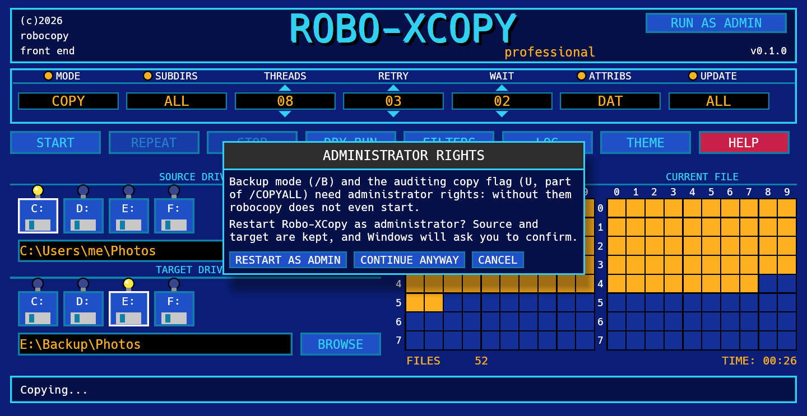

HOW-TO
Everything you need to copy files with Robo-XCopy, in about five minutes.
1. Quick start
- Download
RoboXCopy.exefrom the latest release and run it. There is nothing to install. - Choose the SOURCE: click a drive icon, type a path, or press BROWSE. Do the same for the TARGET.
- Leave MODE on
COPYfor a normal copy. - Press DRY RUN. Nothing is copied; the log shows what would happen.
- Press START. The two grids show the progress; the status bar names the file being copied.
The exact robocopy command line is the first line of the LOG window, so you can always see (and reuse) what the program ran.
2. The screen

Fields
Click a value to change it. Fields with an orange dot toggle; the ones with arrows go up and down by one.
| Field | Values | robocopy |
|---|---|---|
| MODE | COPY copies and never deletes.MIRROR makes the target identical to the source, deleting extra files.MOVE deletes files from the source after copying them. | (none), /MIR, /MOVE |
| SUBDIRS | ALL includes subfolders, even empty ones. NONE copies only the top folder. Locked to ALL in MIRROR. | /E |
| THREADS | How many files are copied at once. 01 means one at a time. Default 8. | /MT:n |
| RETRY | How many times to retry a file that fails. Default 3. | /R:n |
| WAIT | Seconds between retries. Default 2. | /W:n |
| ATTRIBS | What is copied for each file. Shows the flags: DAT (data, attributes, timestamps: robocopy's default), DATS, ALL... Click it to open the COPY BUILDER. | /COPY:flags, /COPYALL |
| UPDATE | Which files are selected. ALL = no rule, NEWER = skip files the target already has with the same or a newer date, n RULES = a custom set. Click it to open the COPY BUILDER. | /XO and others |
Gadgets
| Gadget | What it does |
|---|---|
| START | Runs the copy with the current settings. |
| REPEAT | Runs the previous copy again, with the same settings. |
| STOP | Aborts the copy. A file that was being copied may be left half written in the target (see Restartable mode under Filters). |
| DRY RUN | Lists what would be copied, deleted or skipped, without touching anything. |
| FILTERS | File masks, excludes and extra switches. See below. |
| LOG | The live robocopy output, and where to save a log file. |
| THEME | Switches between Modern Amiga (blue) and Classic X-Copy (black, silver, green). Your choice is remembered. |
| HELP | A short reminder and links to this page. |
| RUN AS ADMIN | Restarts the program with administrator rights. See below. |
Copy builder
Robocopy has dozens of switches. The COPY BUILDER lets you pick them with a description next to each one, and shows the exact command it produces. Open it by clicking ATTRIBS or UPDATE, or from the FILTERS window.

- What to copy (
/COPY):Ddata,Aattributes,Ttimestamps,Ssecurity (NTFS permissions),Oowner,Uauditing. The presets areDAT(robocopy's default),DATS,DATSOandALL(/COPYALL). At least one flag must stay on. - Folders (
/DCOPY): what to copy for the folders themselves. Leave it off for robocopy's default (DA); addTto keep folder dates. - Which files: the selection rules
/XO/XN/XC/XL/XX/IS/IT, with presets ALL FILES and ONLY NEWER. - Other:
/PURGE,/FFT(NAS and FAT drives),/DST,/XJ,/J, and the ones that take a value: age (/MAXAGE,/MINAGE), size (/MAX,/MIN), attributes (/IA,/XA) and a pause between blocks (/IPG). - Command: the resulting command line, live. Anything that has no box can go in Extra args (FILTERS window).
/IPG cannot be used with several threads: if you set a pause, Robo-XCopy runs the copy on a single thread
(the builder tells you). /XX wins over PURGE and MIRROR, so extra files in the target are then left alone.
Drives, paths and grids
- The floppy icons are your drive letters. The lit bulb marks the selected drive. Typing a path is always possible; the icons are a shortcut.
- FILES grid: one cell lights up for every file that has been processed. When it is full it starts again in a second colour.
- CURRENT FILE grid: the progress of the file being copied (one cell is about 1.25%).
- The counters under the grids show the number of files processed and the elapsed time.
3. Copying safely
- Double-check which folder is the source and which is the target before you press START.
- Mirroring a folder onto the root of a drive is rarely what you want. Mirror into a dedicated folder instead.
- If a copy was stopped or the connection dropped, run it again: robocopy skips what is already there.
4. Filters
The FILTERS window holds the less common options.

| Option | Meaning | robocopy |
|---|---|---|
| Restartable mode | Lets an interrupted copy of a large file resume. Slower on small files. | /Z |
| Backup mode | Copies files you can see but not read normally. Needs administrator rights. | /B |
| List only | Same as DRY RUN, but stays on until you untick it. | /L |
| Files | Only these files, e.g. *.doc *.txt. Empty means all. | (file list) |
| Excl. files | Skip these files, e.g. *.tmp *.bak. | /XF |
| Excl. dirs | Skip these folders, e.g. node_modules .git. | /XD |
| Extra args | Any other robocopy switches, passed as they are. | (raw) |
Separate several names with spaces. A name that contains spaces cannot be used in these fields; use a wildcard instead (My*Docs).
5. Log file
Open LOG and use the Log file line at the top.

- Press CHOOSE to pick the folder and the file name, or type a path. NONE turns the log file off.
- Tick Append to add each run to the same file instead of replacing it.
- Tick Unicode file if your file names have accents or non-Latin letters: the log is then saved as UTF-16 (
/UNILOG) so they read correctly. - The folder must already exist: robocopy does not create it, and the program tells you if it is missing.
- The choice applies from the next START. The window keeps showing the live output as well.
- Behind the scenes this adds
/LOG:file(/LOG+to append,/UNILOGfor Unicode) and/TEEto the command.
6. Administrator rights
Robo-XCopy starts as a normal user. Most copies do not need more, and a normal user cannot damage Windows by mistake. You need administrator rights when you:
- use Backup mode (
/B), or the Auditing flagU(part of/COPYALL). Without admin rights robocopy does not even start (exit code 16); - copy to or from protected places such as
C:\Windows,C:\Program Filesor other users' profiles, or files owned by someone else when you copy the owner (O).
Security (S) and owner (O) work without admin rights on your own files.
The program helps without nagging you at every start:
- The top right of the screen shows RUN AS ADMIN when you are a normal user, and * ADMIN * when you are elevated.
- If you press START with Backup mode or the Auditing flag and you are not an administrator, a window offers RESTART AS ADMIN, CONTINUE ANYWAY or CANCEL. If you continue anyway, it will not ask again until you close the program.
- If a copy ends with files denied access (robocopy error 5), or robocopy refused to start because of those options, the same window appears so you can restart elevated and run it again.
- Restarting keeps your source and target paths. Other settings go back to their defaults. Windows asks you to confirm, as for any program.

Z:) between a normal and an elevated program.
After restarting as administrator, use the network path (\\server\share\folder) instead of the drive letter.
7. What the result means
When robocopy finishes, the status bar translates its exit code. Codes below 8 are success.
| Code | Meaning |
|---|---|
| 0 | Nothing to copy: source and target already match. |
| 1 | Files were copied. |
| 2 | The target has extra files or folders that are not in the source. |
| 4 | Some files or folders are mismatched. |
| 3, 5, 6, 7 | A combination of the above (they add up). |
| 8 or more | Some files could not be copied. Check the log. |
| 16 | Fatal error, nothing was copied (bad path, no access, wrong syntax). |
8. Troubleshooting
Windows says "Windows protected your PC"
The program is not digitally signed yet. Press More info, then Run anyway. You can read the source and build it yourself from GitHub.
"Source folder does not exist"
Check the path, or pick it with BROWSE. If you restarted as administrator, a mapped drive letter may have disappeared; use the network path.
Some files were not copied: access denied
Use RUN AS ADMIN, then START again. If it still fails, the file may be open in another program.
A drive does not show up
The icons list the first eight drive letters from C: that exist when the program starts. You can always type any path in the field.
Where is my theme choice stored?
In %APPDATA%\RoboXCopy\theme.txt. Delete the file to go back to the default.
What command does it run?
The first line of the LOG window. A typical copy looks like this:
robocopy C:\Users\me\Photos E:\Backup\Photos /E /MT:8 /R:3 /W:2 /NJH /BYTES